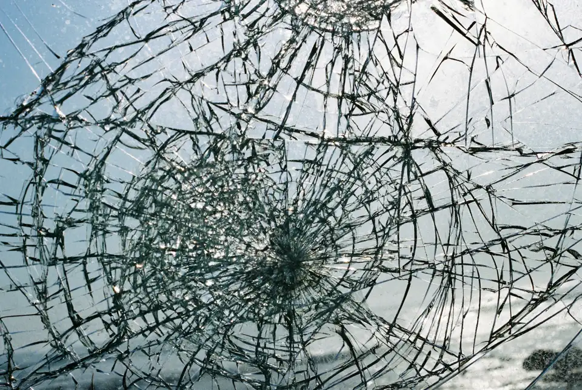

Windshield chip and crack repair in West Melbourne stops a small break before it turns into a crack that needs a whole new windshield. Our technician comes to you, fills the chip or short crack with clear resin, cures it with UV light and seals the surface, usually in about 30 minutes, so your factory windshield stays on the car.

Chip repair starts with cleaning loose glass and debris out of the impact point and drying any moisture trapped inside. A bridge tool attaches over the chip and pushes resin into every leg of the break, then pulls a vacuum to draw out air. UV light cures the resin, the surface is scraped flat and polished. A short single crack is drilled at the end to stop it running, then filled the same way.
The sooner resin goes in, the cleaner the repair looks and the better it holds.
Most chips up to about this size are good candidates for repair.
Single cracks under about six inches can often be stopped and filled.
Two or three small chips can usually be repaired in the same visit.
Older chips can still be repaired if they have not spread, though dirt may show more.
Long highway runs on I-95 and big temperature swings are when chips tend to spread.
Rock chips come from small stones thrown up by the tires of the vehicle ahead. West Melbourne sits right on I-95 with busy interchanges at US-192 and Palm Bay Road, and new neighborhoods west of the interstate keep dump trucks and gravel haulers on Minton Road, Ellis Road and the St. Johns Heritage Parkway. A stone hitting glass at highway speed is enough to break the outer layer, and following trucks with open beds makes it far more likely.
Chip repair is the smallest auto glass job. The main factors are how many chips need filling and whether a short crack is part of the damage. Many insurers cover chip repair in full because it saves them a windshield, and in Florida the comprehensive deductible does not apply to windshield damage. Call with the number and size of the chips for a free estimate.
| Repair the chip | Leave it | |
|---|---|---|
| What happens next | The break is sealed and stops spreading | Heat, bumps and AC can run it into a crack |
| How it looks | Clearer glass, a faint mark may remain | Collects dirt and gets more visible |
| Down the road | Factory windshield stays on the car | Often ends in a full replacement |
| Time | About 30 minutes | None today, more later |
If the chip has already become a long crack, windshield replacement is the safer fix. We also handle windshield replacement and sunroof glass replacement, or you can see all auto glass services in West Melbourne.
A resin repair makes a chip much harder to see, but a faint mark often remains where the stone hit. The main goal is strength: the resin bonds the broken glass so the chip cannot spread. Chips repaired soon after they happen look the best.
Yes. The resin is cured with UV light before the technician leaves, so the car can be driven and washed right away. There is no adhesive cure time like there is after a full windshield replacement.
Cover it with a piece of clear tape to keep out dirt and water, park in the shade and avoid aiming the defroster or AC straight at the glass. Slammed doors and hard potholes can also spread it, so book the repair soon.
A single crack shorter than about six inches that does not touch the edge of the glass can often be repaired. Longer cracks, cracks that branch in several directions and cracks at the edge usually need a new windshield.
Call for a free estimate. We confirm the right glass and the right fix before anyone drives out.
Call (321) 339-1784 Now